Founding and early years
- Billy Birrell (1939 July - 1952 June)
Modernisation and the first league championship
- Ted Drake (1952 July - 1961 September)
- Tommy Docherty (1961 October - 1967 September)
- Dave Sexton (1967 October - 1974 September)
- Ron Suart (temporary) (1974 October - 1975 March)
- Eddie McCreadie (1975 April - 1977 June)
- Ken Shellito (1977 July - 1978 December)
- Danny Blanchflower (1978 December - 1979 September)
- Geoff Hurst (1979 September - 1981 April)
- Bobby Gould (1981 April - 1981 May)
- John Neal (1981 July - 1985 June)
Redevelopment and financial crisis
- John Hollins (1985 July - 1988 March)
- Bobby Campbell (1988 March - 1991 June)
- Ian Porterfield (1991 July - 1993 February)
- David Webb (1993 February - 1993 June)
- Glenn Hoddle (player-manager) (1993 June - 1996 May)
- Ruud Gullit (player-manager) (1996 May - 1998 February)
- Gianluca Vialli (player-manager) (1998 February - 2000 September)
- Graham Rix (temporary) (2000 September - 2000 September)
- Claudio Ranieri (2000 September - 2004 May)
2003–2022: Abramovich era
- José Mourinho (First time) (2004 June - 20007 September) 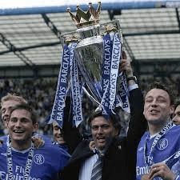
- Individual Awards in Chelsea
- Avram Grant (2007 September - 2008 May) 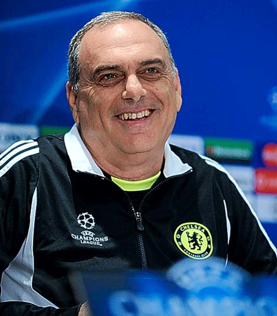
- Luiz Felipe Scolari (2008 July - 2009 February)
- Ray Wilkins (temporary) (2009 February - 2009 February)
- Guus Hiddink (temporary) (2009 February - 2009 June) 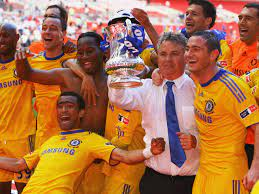
- Carlo Ancelotti (2009 June - 2011 May) 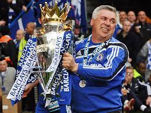
- Individual Award in Chelsea
- André Villas-Boas (2011 July - 2012 March)
- Roberto di Matteo (2012 March - 2012 November) 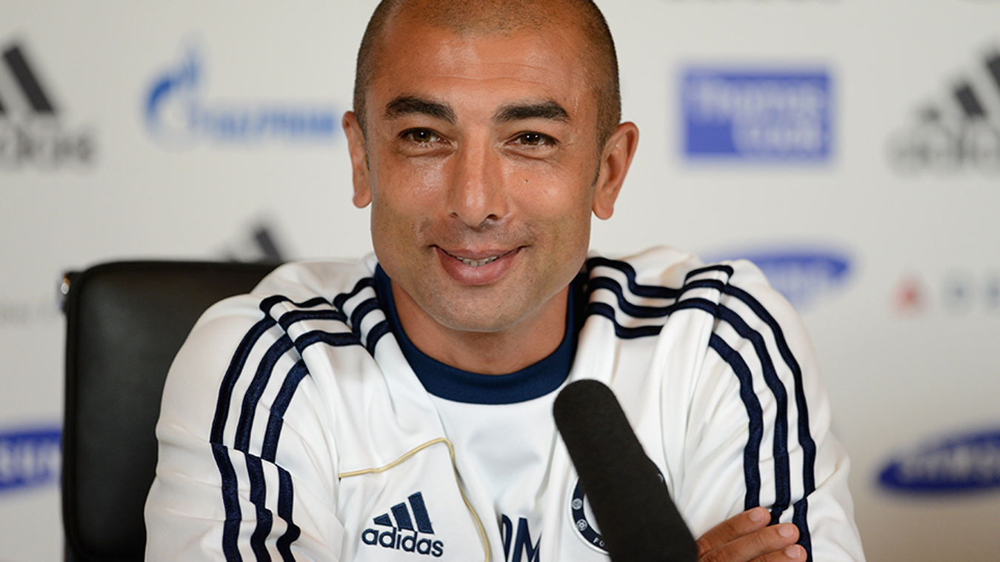
- Rafael Benítez Maudes (temporary) (2012 November - 2013 May) 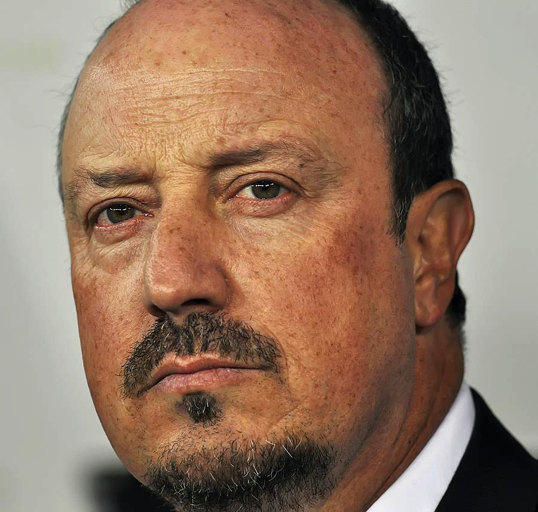 FIFA Club World Cup runner-up: 2012
- José Mourinho (Second time) (2013 June - 2015 December) 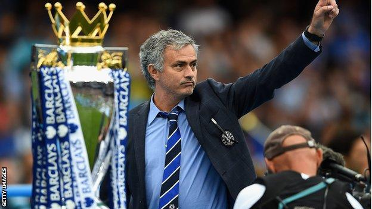
- Individual Award in Chelsea:
- Guus Hiddink (Second time temporary) (2015 December - 2016 May) 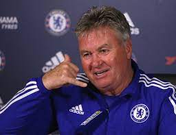
- Antonio Conte (2016 July - 2018 July) 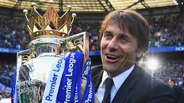
- Individual Awards in Chelsea
- Maurizio Sarri (2018 July - 2019 July) 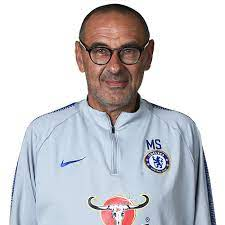
- Frank Lampard (2019 July 4 - 2021 January 25) 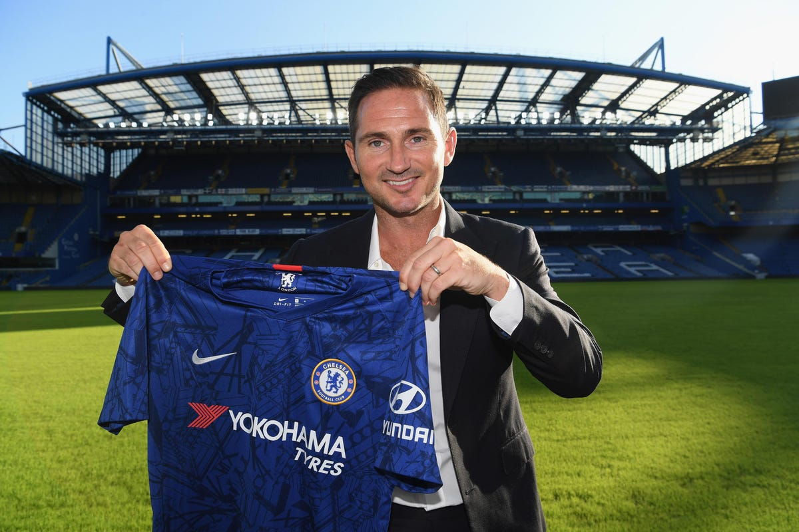
- Thomas Tuchel (2021 January 25 - 2022 September 7) 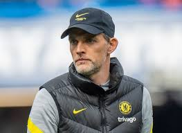
- Individual Award in Chelsea
Premier League: 2004-05, 2005-06
FA Cup: 2006-07
Football League Cup: 2004-05, 2006-07
FA Community Shield: 2005
Onze d'Or Coach of the Year: 2005
IFFHS World's Best Club Coach: 2005
Premier League Manager of the Season: 2004–05, 2005–06
Premier League Manager of the Month: November 2004, January 2005, March 2007
UEFA Team of the Year: 2005
World Soccer Magazine World Manager of the Year: 2005
BBC Sports Personality of the Year Coach Award: 2005
UEFA Champions League runner-up: 2007–08
FA Cup runner-up: 2007–08
Premier League runner-up: 2007–08
League Cup runner-up: 2007–08
Individual Awards in Chelsea:
Premier League Manager of the Month: April 2008
FA Cup: 2008–09
Premier League: 2009–10
FA Cup: 2009–10
FA Community Shield: 2009
Premier League Manager of the Month: November 2009, August 2010, March 2011, April 2011
FA Cup: 2011–12
UEFA Champions League: 2011–12
UEFA Europa League: 2012–13
Individual Award in Chelsea
Premier League Manager of the Month: April 2013
UEFA Super Cup runner-up: 2013
Premier League: 2014-15
Football League Cup: 2014-15
Premier League Manager of the Season: 2014-15
Premier League: 2016–17
FA Cup: 2017–18
FA cup runner-up: 2016-17
Premier League Manager of the Month: October 2016, November 2016, December 2016
London Football Awards for Manager of the Year: 2017
Premier League Manager of the Season: 2016–17
LMA Manager of the Year: 2016–17
Special Achievement GQ Men of the Year Award: 2017
The Best FIFA Men's Coach (2nd Place): 2017
UEFA Europa League: 2018–19
EFL Cup runner-up: 2018–19
FA Cup runner-up: 2019–20
Individual Award in Chelsea
Premier League Manager of the Month: October 2019
UEFA Champions League: 2020–21
UEFA Super Cup: 2021
FIFA Club World Cup: 2021
FA Cup runner-up: 2020–21, 2021–22
EFL Cup runner-up: 2021–22
Premier League Manager of the Month: March 2021, October 2021
German Football Manager of the Year: 2021
UEFA Men's Coach of the Year: 2020–21
IFFHS Men's World's Best Club Coach: 2021
The Best FIFA Football Coach: 2021
2022–present: Boehly–Clearlake era
- Graham Potter (2022 September 8 - 2023 April 2) 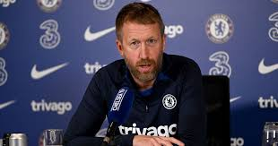
- Bruno Saltor (temporary) (2023 April 2- 2023 April 5)
- Frank Lampard (Second time) (temporany) (2023 April 6 - 2023 June) 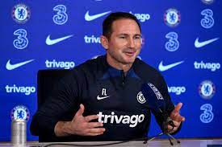